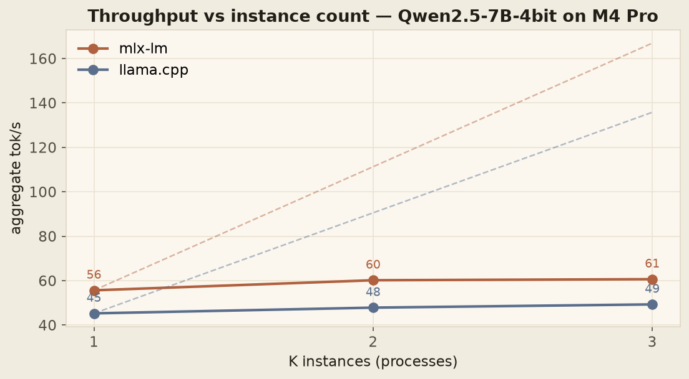

Three times the memory bought me nine percent.
I built the fix everyone suggests for the flat line in Part 1 — K process-isolated LLM instances behind one queue — and measured it at K = 1, 2, 3. The real ceiling on Apple Silicon isn’t the lock. It’s the memory bus, and the arithmetic proves it.
K process-isolated instances of a 4-bit 7B model, K = 1 → 3 on 24 GB of unified memory: aggregate throughput gains cap at +9% for three times the RAM, while every stream’s decode rate degrades almost linearly. The arithmetic says why — one instance already streams ~250 GB/s of the M4 Pro’s ~273 GB/s unified-memory bandwidth. The bus was the ceiling all along, only continuous batching gets past it, and nothing ships continuous batching for Metal.
The number I didn’t believe
When the K=3 run finished, I did what you do with a result you don’t believe: I ran it again. And then a third time. Same number. Three process-isolated instances of the model — three times the memory, three times what everyone calls “capacity” — delivered nine percent more tokens per second than one instance.
This post is the follow-up to Part 1, where a single model instance serialized every request through a lock and throughput stayed flat from one user to thirty-two. The fix every discussion thread suggests is to stop serving from one instance: just run K of them. So I built exactly that — a dispatcher running K engine instances in K isolated processes, draining one shared request queue — and measured it properly.
I’ll be honest about my prior going in. I’d done the back-of-envelope math and suspected the win would be modest. But an estimate is not a measurement, and this particular number decides something real: whether “buy more Macs” is a scaling strategy or a waste of money. The measurement says waste. Here’s the arithmetic behind it, step by step.
Building the honest version
The lazy implementation of “run K instances” is threads. It’s also wrong, twice over: the per-instance lock from Part 1 still serializes everything, and Python’s GIL throttles decode on top of it. Threads would understate the machine — you’d be measuring Python, not the hardware.
So bench.py dispatch runs each instance as its own process
(spawn context — fork and Metal do not get along), each with
its own warmup, because Metal kernel compilation is lazy and per-process: skip the
warmup and you’re benchmarking the compiler. All K processes drain one shared request
queue under the same workload contract as Part 1 — same 12 prompts, greedy decode,
max_tokens=256. Two details worth calling out:
- Queue-inclusive TTFT. Measured from submit to first token, across process boundaries — the latency a client actually feels, not the engine’s private view.
- Worker RSS sum. The true RAM cost of K instances, summed per worker — the number a capacity plan needs.
Full additions to the fairness contract are in
docs/methodology.md.
K is capped at 3 by the 24 GB of unified memory — a fourth ~4.5 GB instance risks swap,
and swap makes every number in this post garbage.
The result

| Engine | agg tok/s @ K=1 | @ K=2 | @ K=3 | TPOT per stream |
|---|---|---|---|---|
| mlx-lm | 55.6 | 60.2 (+8%) | 60.7 (+9%) | 17 → 32 → 48 ms |
| llama.cpp | 45.3 | 47.8 (+6%) | 49.3 (+9%) | 22 → 41 → 60 ms |
Three times the memory buys single-digit throughput. And the TPOT column is the tell: each individual stream’s decode rate degrades almost perfectly linearly with K. The instances aren’t adding capacity — they’re dividing the same saturated resource among more users.
Dividing what resource? That’s the question the rest of this post answers.
The arithmetic
Step 1 — how many bytes does one token cost?
Qwen2.5-7B has ~7.07 billion parameters. At 4-bit quantization that’s half a byte each for the bulk of them:
7.07 × 10⁹ params × 0.5 B/param ≈ 3.5 GB
Embeddings, norms, and the Q4_K_M mixed-precision blocks add weight kept at higher precision, plus KV cache and runtime state. Measured peak RSS: 4.3 GB (mlx), 4.7 GB (llama.cpp). Call the working set ~4.4 GB per instance.
Autoregressive decode is the worst case for memory: to emit token t, the model performs one forward pass that touches every weight exactly once. There is no reuse, no cache-friendly locality to exploit — the weights are the per-token working set. So:
bytes moved per output token ≈ 4.4 GB
Step 2 — is decode compute-bound or memory-bound?
A quick roofline check settles it. Each weight participates in one multiply-accumulate per token — 2 FLOPs per parameter, so one token of decode costs:
2 × 7.07 × 10⁹ ≈ 14 GFLOP per 4.4 GB ⇒ ~3.2 FLOP per byte
The M4 Pro’s GPU offers roughly 17 TFLOPS against 273 GB/s of bandwidth — a machine balance of ~62 FLOP per byte. Decode needs 3.2. The workload wants nineteen times less compute per byte than the chip can balance: decode is memory-bound by an order of magnitude, on any hardware, not just this one. Faster kernels can’t fix a bound like this; only moving fewer bytes per token can.
Step 3 — so how saturated is one instance?
mlx-lm’s warm single-stream rate is 56 tok/s. Multiply:
The first instance — the single-user case, Part 1’s flat line — already runs the bus at ~90% of spec. And this is a lower bound: KV-cache reads grow with context length and ride the same bus, so true pressure is higher. The headroom left for any additional instance is:
(273 − 246) / 246 ≈ 11% max additional throughput
Measured at K=3: +9%. The prediction and the measurement close almost completely — the missing couple of points are scheduler overhead and KV traffic. The +9% isn’t weak scaling; it’s the entire remaining bus, recovered.
Step 4 — the invariant that pins the wall
If K instances were genuinely independent capacities, total memory traffic would scale with K and the product below would grow. If instead they share one fixed bus, the product must stay pinned at the bus rate. Multiply each stream’s measured decode rate by its per-token bytes, then by K:
| K | per-stream tok/s (mlx) | × 4.4 GB | × K = total GB/s |
|---|---|---|---|
| 1 | 55.8 | 246 GB/s | 246 |
| 2 | 30.1 | 132 GB/s | 265 |
| 3 | 20.4 | 90 GB/s | 269 |
The product doesn’t grow with K — it converges upward toward a hard limit and stops: 246 → 265 → 269, ceilinging at the M4 Pro’s 273 GB/s spec. That is the signature of a shared fixed resource. llama.cpp shows the same shape at lower effective bandwidth (213 → 225 → 233 GB/s at 4.7 GB/instance) — its kernels extract less of the bus per pass, which is exactly the Part 1 finding that mlx decodes faster, but the wall it hits is identical.
And the per-stream cost falls out of the same equation: total bandwidth is fixed, so each stream gets roughly β/K, meaning TPOT scales with K:
TPOT(K) ≈ K × 4.4 GB / β
Measured: 17 → 32 → 48 ms (mlx) and 22 → 41 → 60 ms (llama.cpp). Near-perfect proportionality to K, exactly as the shared-bus model predicts.
Once you see the arithmetic, the chart stops looking like a bug and starts looking like physics.
Two ceilings
The ceiling diagram on Apple Silicon has two layers, and this benchmark separates them:
- The lock ceiling — one instance serializes every request (Part 1’s flat line). Removed by running K instances.
- The bandwidth ceiling — remove the lock, and the memory bus becomes the limit (this benchmark). Each instance draws ~4.4 GB per token from the same ~273 GB/s; the first one already takes 90% of it.
Part 1 measured layer 1 and thought it was the floor. It wasn’t — it was sitting on layer 2.
Why continuous batching is the only real fix
Everything above reduces to one ratio: bytes of weights moved per token served. A lone stream pays the full 4.4 GB. But a batched forward pass over B concurrent requests reads the weights once for the whole batch — the same bytes amortize over B tokens:
bytes per token = 4.4 GB / B ⇒ same bus, B× the streams
That division — not instance count, not kernel tuning — is the entire reason
vLLM, SGLang, TensorRT-LLM, and TGI
exist, and why “just run K instances” is not a substitute for any of them. None of the
continuous-batching engines run on Apple Silicon today. So on a MacBook Pro your real
options are exactly three:
- One instance, serialized — measured here, at its ceiling.
- K instances — measured here, recovering the last ~10% of the bus for 3× the RAM.
- Wait for someone to ship continuous batching for Metal.
One methodology footnote: under memory pressure, macOS/Metal page accounting makes mlx
workers’ reported RSS wander between runs, while llama.cpp’s reports scale linearly —
the RSS figures above use llama.cpp’s accounting where they must agree. All caveats in
docs/methodology.md.
What I’d actually do with this
- Single user or async batch jobs: the laptop is enough. 45–56 tok/s on a 7B model with zero per-token cost, zero network latency, and full data privacy. Genuinely competitive with GPT-3.5-class APIs for one consumer.
- A team: this data retires the “fleet of cheap Macs” plan. Mac farms multiply RAM, power, and dollars for single-digit throughput — the bus doesn’t replicate across instances on one SoC, and a fleet of separate Macs just parallelizes the queue, it doesn’t raise per-instance rates. The honest multi-user answer is a cloud GPU behind a continuous-batching engine.
- Engine choice still follows workload shape — TTFT-sensitive chat to llama.cpp, decode-heavy generation to mlx-lm (Part 1’s decision table).
What’s next
The bandwidth model above makes a testable prediction. An H100 offers ~3.35 TB/s of HBM against the M4 Pro’s 273 GB/s:
3,350 / 273 ≈ 12× the memory bus ⇒ ~12× the decode ceiling
Phase 2 rents an H100 for a day and runs this exact workload against vLLM and TensorRT-LLM with continuous batching. If the same arithmetic holds, the interesting number that falls out is the cost-per-token crossover — the exact concurrency at which cloud GPU becomes cheaper than buying another MacBook. Same fairness contract, same 12 prompts, one chart that answers “local or cloud?” for good.
Reproduce
git clone https://github.com/anubhavagr/inference-lab
cd inference-lab
uv venv && source .venv/bin/activate
uv pip install mlx-lm llama-cpp-python matplotlib rich
hf download mlx-community/Qwen2.5-7B-Instruct-4bit --local-dir models/qwen25-7b-mlx-4bit
hf download bartowski/Qwen2.5-7B-Instruct-GGUF --include "*Q4_K_M*" --local-dir models/qwen25-7b-gguf-q4k
# K-instance dispatcher, K = 1, 2, 3 (one process per instance)
python bench.py dispatch mlx models/qwen25-7b-mlx-4bit
python bench.py dispatch llama models/qwen25-7b-gguf-q4k/Qwen2.5-7B-Instruct-Q4_K_M.gguf
python -m bench.plotsRun it on your own machine and check Step 4 yourself: multiply your per-stream tok/s by your model’s GB and by K. If it pins near your chip’s memory bandwidth — and it will — you’ve found your ceiling too.